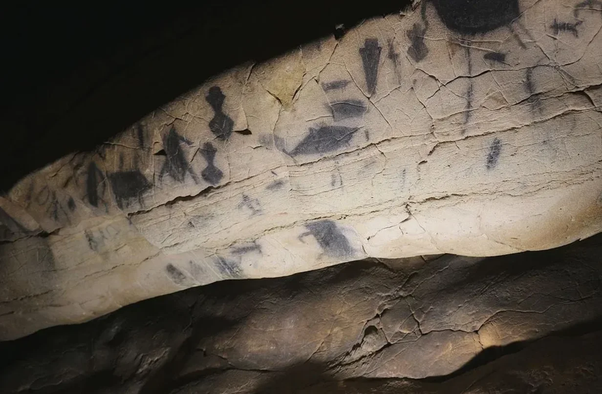
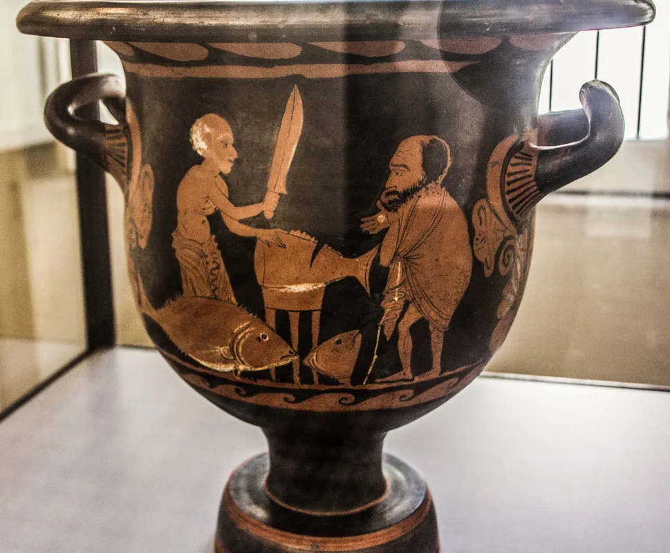

Oltre il mito: le radici economiche, umane e rituali della Tonnara di Gallipoli. Un viaggio nell'architettura invisibile che ha governato le acque dello Jonio per secoli.
La pesca del tonno nel Mediterraneo ha origini millenarie: i graffiti della grotta del Genovese a Levanzo raccontano una pratica di caccia già in uso tra il 10.000 e il 6.000 a.C.
Fenici e Greci consideravano il tonno un prodotto strategico. Strabone ne parla come di un bene prezioso trasportato fino a Cadice, mentre Aristotele osserva la sua rotta migratoria dallo Stretto di Gibilterra verso i mari interni.
Il tonno non era solo pesca: era un motivo di esplorazione e di commercio, tanto che in Atlantico furono coniate monete con l’effigie del pesce. La sua storia attraversa Fenici, Greci, Romani, Bizantini, Arabi e Normanni, fino ad arrivare alla civiltà moderna della tonnara salentina.
Del tonno parlarono anche Omero, Polibio, Plinio, Plutarco e Galeno, ma è grazie ad Archestrato di Gela, il primo poeta gourmet, che giungono le prime descrizioni dei metodi di conservazione duraturi. Marziale lo consacra invece come cibo da solo, un alimento robusto per chi vive in viaggio e ama i sapori intensi.

L'almadraba è una tecnica di pesca antica, diffusa in Italia, Marocco, Portogallo e Spagna. Derivata dall'arabo andaluso almaḍrába, significa 'luogo dove si colpisce'.
Navigavano il Mediterraneo e consideravano il tonno un prodotto prezioso per i viaggi oltre le Colonne d'Ercole.
Archestrato di Gela descrive i metodi di conservazione duratura e l'uso del tonno nella cucina degli antichi.
Marziale celebra il tonno nelle sue eleganti ricette da banchetto e ne lega il consumo al gusto aristocratico.

Il canto o cialoma dei tonnaroti, quando lentamente ed in modo cadenzato sollevano la pesante culica della tonnara, è un documento di straordinaria importanza etnologica. S’invocano Gesù Cristo e tutti i santi, ma anche Allah perché le prime parole “Aja mola” sono una deformazione siciliana di “Ai ya mawla”, che in arabo significa “O mio Signore”.
La tonnara, con reti, ancore, barche, artigiani, pescatori e famiglie, porta l’impronta delle civiltà che l’hanno usata: fenicia, greca, romana, bizantina, araba, normanna e, più tardi, quella moderna post-rinascimentale.
Il canto scandiva il ritmo del lavoro e consolidava l’identità collettiva dei tonnaroti.
La preghiera, la devozione e i riferimenti religiosi mescolano cristianesimo e retaggi arabi.
Clicca su una fase della storia per aprire i documenti e le fonti d'archivio
I primi impianti ad imbuto creati dalle popolazioni messapiche lungo le insenature naturali gallipoline.
Concessioni reali aragonesi e il diploma di Carlo V (1526) a tutela del monopolio delle acque comunali.
La tonnara di Gallipoli diviene la più grande di Puglia: nelle reti cadevano anche balenottere e foche monache.
L'ingresso della pesca industriale a motore porta al definitivo disarmo della tonnara fissa salentina.
La timeline estesa con datazione, fonti d'archivio e bibliografia per ogni voce.
Il trasferimento dell’intero archivio antico del Comune nel deposito dell’allora archivio provinciale è attestato dal verbale compilato nel 1833 dal cancelliere comunale Carlo Mazzarella e firmato dal sindaco Francesco Pasca.
Perfino i documenti preunitari della città finirono per un periodo accatastati nel teatro Garibaldi e furono ceduti al rigattiere, con un procedimento penale e una lunga storia di dispersione.
Fonte: Gallipoli_Archivio_delle_scritture_antic.pdf
Queste carte non sono solo un elenco burocratico: rappresentano la memoria di una comunità che ha governato il mare, le reti e le regole della tonnara.
“Il Libro Rosso e l’archivio antico… il verbale compilato nel 1833… del trasferimento dell’intero archivio antico del Comune nel deposito dell’allora archivio provinciale.”
Scarica e consulta i file originali per approfondire i temi storici, archivistici e della tonnara.
Le parole dei tonnarotti: un'eredità linguistica nata dall'incontro tra arabo, latino, greco e il dialetto gallipolino.
Dall'arabo ra'īs (capo supremo)
Il comandante assoluto della tonnara. Aveva autorità totale sulle manovre, sulla calata delle reti, sulla disciplina dei tonnarotti e sull'ora esatta della mattanza.
Dall'arabo jalā (invocazione/canto)
La cantilena ritmica intonata dalla ciurma per coordinare a braccia nude il recupero e il sollevamento delle pesantissime reti bagnate in fibra vegetale.
Dal latino pedalis (ancoraggio di base)
La lunga parete di rete che partiva direttamente dalla scogliera di terra (tra Punta Pizzo e il golfo) e si estendeva in mare per sbarrare la strada ai tonni.
Dall'arabo mugiarah (barca leggera)
L'imbarcazione a remi più piccola e veloce su cui saliva esclusivamente il Rais per ispezionare le reti, avvistare l'arrivo dei banchi e dare gli ordini.
L'ultima vasca dell'impianto fisso
L'unico bacino di rete provvisto di fondo (detto lu corpu). Una volta chiuso il passaggio, la rete veniva tirata su dai vascelli per la fase finale della pesca.
Thunnus thynnus
I maestosi pelagici del Mediterraneo che in primavera risalivano le correnti calde dello Jonio transitando al largo delle acque di Gallipoli.
Stiamo digitalizzando documenti, mappe storiche, fotografie di famiglia e oggetti legati ai tonnarotti. Se possiedi materiale d'epoca, condividilo con il nostro comitato scientifico.